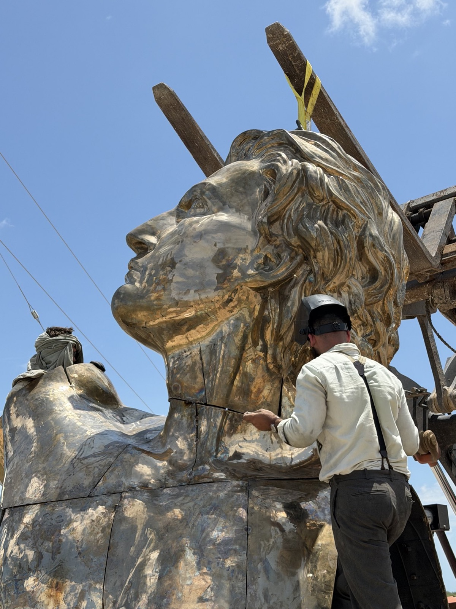
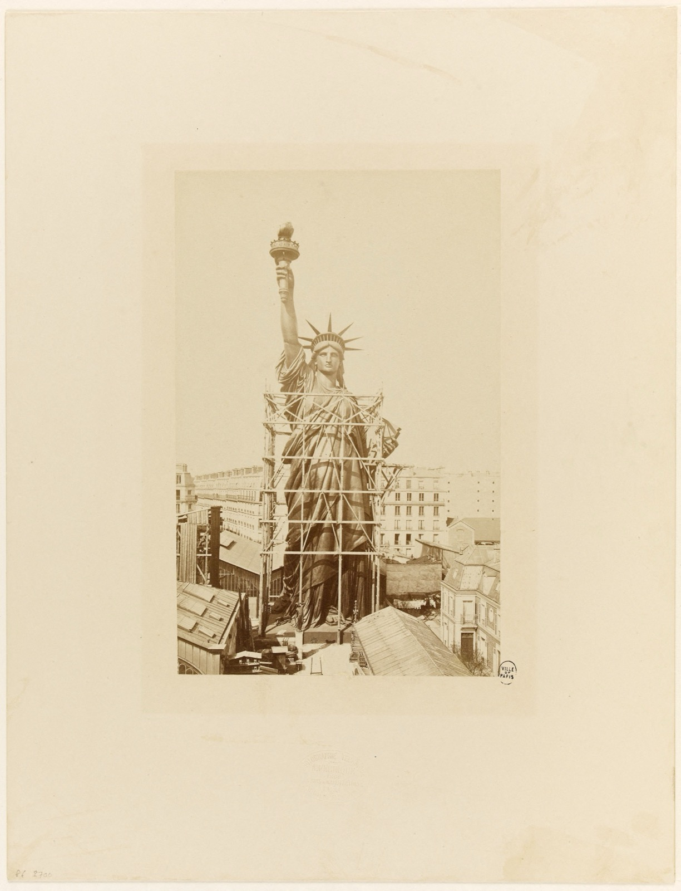
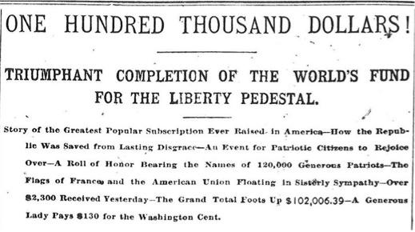
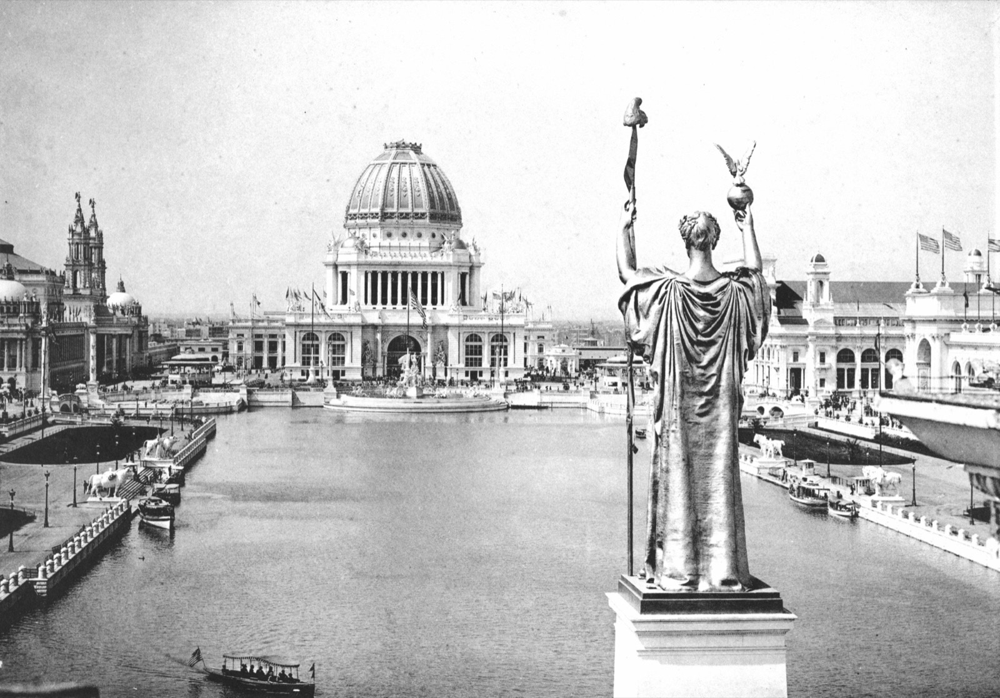
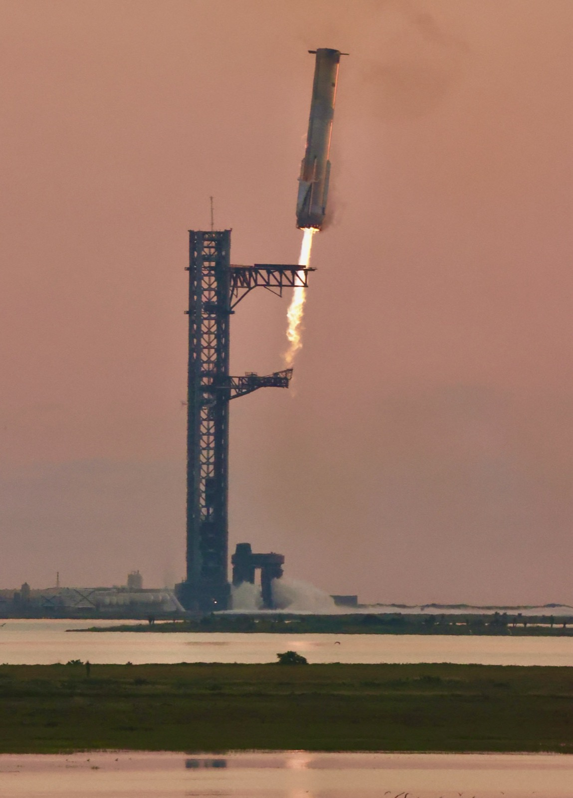
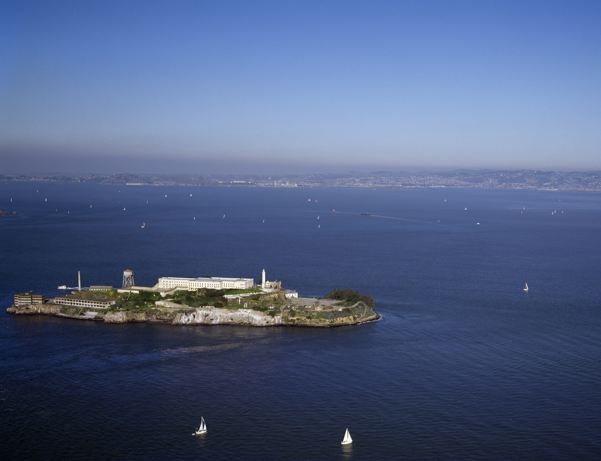
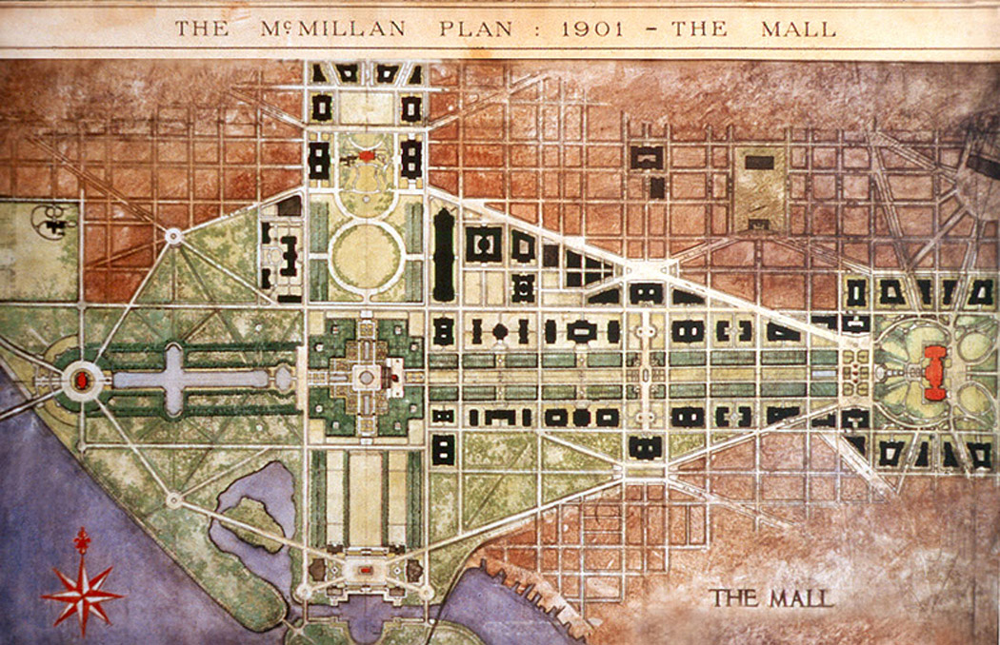

A bronze titan at the gates of Starbase, a colossus proposed for Alcatraz, an arch and a garden of heroes under construction in Washington, and the towers we have filed for Puget Sound. The Republic is 250 this year. This is the brief in support.
At the gates of SpaceX's Starbase in Texas, a French workshop called Atelier Missor is assembling a fifty foot bronze Prometheus, cast in sections outside Paris and shipped across the Atlantic. The statue cost about a million dollars and stands on private land at the edge of the city limits, secured with the landowner's consent and local permits. By the atelier's own account it was commissioned by nobody, and reporting on the project states that SpaceX neither ordered it nor paid for it. Two French sculptors decided the American launch site deserved a titan, cast one, and brought it over.

The statue is one item in a longer ledger. For the first time in several generations, colossal civic ambition is under construction in America, in Texas, on San Francisco Bay, and in the capital at once, and this brief is filed as a friend of all of it.
Atelier Missor was founded in January 2021 in Nice by two brothers, Missor and Massoud, and now operates outside Meaux, northeast of Paris. They cast the old way: a wax model, a plaster investment formed around it, the wax melted out, and molten bronze poured in at nearly two thousand degrees. The technique is older than the alphabet. Their first act was gifting a three meter bronze of Napoleon to the city of Nice, and their subjects since have been the heroic canon, Napoleon, Joan of Arc, and now the fire-giver himself. They have taken venture backing from Founders, Inc. in San Francisco, an arrangement almost without precedent for a classical foundry, and their stated ambition is an American foundry producing thousands of statues honoring the Western tradition.
Their declared next medium is titanium, which is lighter than bronze, stronger than steel by weight, immune to salt air, and unused in monumental art anywhere on earth. The thirty meter titanium Prometheus they have pitched as a permanent successor at Starbase would be the first of its kind. Either metal meets the standard this organization has argued for since its founding: permanent materials for permanent statements. The brothers' standing line, repeated in nearly every interview, is that our era needs statues. They are correct.
France has sent a colossus before, and America almost said no. The idea began at a dinner near Versailles in 1865, where the jurist Edouard de Laboulaye proposed a French monument to American liberty. The sculptor at the table, Frederic Auguste Bartholdi, sailed to New York in 1871, chose Bedloe's Island while his ship was still entering the harbor, and spent the next fifteen years building the statue. The right arm and torch stood in Philadelphia at the Centennial Exhibition of 1876. The head stood in a Paris park at the Exposition of 1878. By 1884 the complete figure, three thirty-seconds of an inch of hammered copper over an iron skeleton engineered by Gustave Eiffel, rose to full height above the rooftops of the rue de Chazelles, and Parisians climbed onto their roofs to see it. It was then taken apart into 350 pieces, packed into 214 crates, and carried across the Atlantic by a French navy transport that nearly foundered in a storm on the way.

The American half of the bargain was the pedestal, and the American half collapsed. Congress adjourned without appropriating a dollar. The New York legislature voted $50,000 and Governor Grover Cleveland vetoed it. The statue sat in crates on Bedloe's Island while Boston, Philadelphia, and Baltimore offered to take it off New York's hands. What saved it was not government but a newspaper. In March 1885 Joseph Pulitzer opened the front page of the New York World to the pedestal fund and promised to print the name of every donor, however small the gift. About 120,000 Americans sent in $102,006.39 in five months, most of them giving less than a dollar, schoolchildren mailing in pennies among them. The pedestal was finished, the statue was dedicated on October 28, 1886, and the man who had vetoed the $50,000, by then President of the United States, presided over the ceremony.

At the turn of the last century this kind of ambition did not need a defense, because it was the working assumption of the men running the country's cities. Daniel Burnham is the proof. In 1893 he raised a city of two hundred buildings on a Chicago swamp in twenty-six months, and the fair opened on time and drew 27 million visits. In 1902 the McMillan Commission he anchored gave Washington the Mall as Americans know it. And from the spring of 1904 to the summer of 1905 he worked from a cottage on the shoulder of Twin Peaks above San Francisco, invited not by the city but by the Association for the Improvement and Adornment of San Francisco, a private committee organized by former mayor James Phelan. With his twenty-six-year-old assistant Edward Bennett he traced forty-three sight lines across forty-nine summits and delivered a complete plan for the city on September 27, 1905. He took no fee.

The report ran 184 pages and 73 plates, nine chapters, each one a buildable program: a civic center on a 1,200 foot oval at Van Ness and Market with a 200 foot Doric column carrying a colossal bronze at its center, an outer boulevard, the hills held for the public, a park system running from the Civic Center to the ocean.
Chapter VII was the Athenaeum. Burnham specified a national university campus at Lake Merced: a library modeled on the Bibliothèque Nationale, an observatory, formal gardens, rowing courses on the lake itself, and a residential quadrangle for two thousand students. He positioned it as the intellectual anchor of the Pacific city, the West Coast counterpart to Harvard and Columbia. Set it beside the renders for the Prometheion ringing Alcatraz and it is the same instinct, a crown of civic architecture on the most commanding ground available, built to tell the city what it is for. The Athenaeum site became San Francisco State, the zoo, and a golf course. None of it is what Burnham specified, which means the chapter is not dead, it is still pending.
The ending is the cautionary half of the story. The printed copies of the report came back from the bindery in April 1906 and were stacked in City Hall when the earthquake struck on the 18th. Most of them burned with the building, and the plan was buried in the rush to rebuild fast rather than well. Ambition at this scale has a window, and a city that misses the window waits a century for the next one. The window is open again now, and this time it is open in Texas, on San Francisco Bay, in Washington, and in Puget Sound at once.
The Missor Prometheus stands at the edge of the newest company town in America. Starbase incorporated as a Texas city in May 2025, and its industry is the largest flying machine ever built, a stainless steel rocket roughly 400 feet tall. In October 2024 the town watched a twenty-three story booster fly back from the edge of space and get caught in midair by the arms of its own launch tower. The pairing of subject and site is exact: Prometheus stole fire from the gods and handed it to men, and Starbase exists to hand men the means to leave the planet. The precedent is exact too. Paul Manship's gilded Prometheus, eighteen feet of bronze presiding over the plaza, went up at the center of Rockefeller Center in 1934, in the middle of the Depression, above a line adapted from Aeschylus: fire "that hath proved to mortals a means to mighty ends." A country that did that will understand a titan at a rocket works.

In San Francisco, the American Colossus Foundation, led by the Bitcoin mining entrepreneur Ross Calvin, proposes a Prometheus roughly 450 feet tall over Alcatraz Island, half again the height of Liberty, ringed by a museum called the Prometheion, privately funded at a target of $450 million, and offered as a gift for the country's 250th birthday.
The site argument is the strong one. The island's history is a list of firsts and endings: the first lighthouse on the Pacific coast in 1854, the first American fort at the Golden Gate, a military prison from the Civil War onward, and the federal penitentiary of 1934 to 1963 that held Capone and gave the rock its name. The penitentiary closed because salt air was eating the concrete and every year of upkeep cost roughly three times a mainland prison; it has now been closed more than twice as long as it was ever open. More than a million visitors a year ride a ferry out to walk an empty cellblock, and the current federal proposal for the site is to spend $152 million making it a prison again. The most prominent rock in the finest harbor on the Pacific coast is a ruin with a gift shop. The Greeks raised the Colossus at the harbor mouth of Rhodes because arrival is the moment a city says what it is. A closed prison is not a civic identity. A harbor entrance is.

The proposal is early. There is no filing at Interior, and raising anything on a National Historic Landmark inside the Golden Gate National Recreation Area means Congress, environmental review, and Section 106 consultation, with public comment at every stage. That is where friends of the project file, and we will. A monument should clear a high bar. The bar is what separates a monument from a billboard.
The capital is not debating ambition, it is pouring concrete. The White House ballroom is under construction: 90,000 square feet, seating for roughly a thousand, privately funded, with the East Wing cleared in the fall of 2025 and Clark Construction under contract. A Triumphal Arch is planned for the Memorial Bridge approach to Arlington, the ceremonial axis the McMillan Plan drew in 1902; the Federal Register documents estimate two to three years of construction, and the administration says work begins this year. The National Garden of American Heroes, a planned 250 statues, is sited for West Potomac Park, and the National Endowment for the Humanities has funded commissions for some 150 sculptors at up to $200,000 apiece, the largest federal statuary program in the country's history. The Reflecting Pool is being renovated. Behind all of it stands EO 14344, which made classical architecture the default for federal buildings. One can argue any single project; together they are the first coordinated monumental program in Washington since the McMillan Commission, and the sculptors the NEH is paying are the future workforce of every atelier, including the French one trying to open an American foundry.

We are not filing this brief as spectators. Our own docket runs the same direction. Seattle's Tallest Building Plan starts from the two places the city actually sees itself, I-5 at SeaTac and the crest of the Ship Canal Bridge, where the skyline has a hole between Columbia Center, the tallest building in the city since 1985, and Rainier Square. The next tallest building in Seattle goes exactly there, and it goes up in materials that will not look dated in fifteen years. Redmond's Tallest Building Plan makes the suburban case: Busan put a 101 story tower on the beach at Haeundae, while Redmond, which headquarters Microsoft, just opened light rail, and holds 640 acres of parkland on Lake Sammamish, caps its downtown at 144 feet. Redmond's tallest building is the opening move in the doctrine of beautiful suburban architecture. Behind those sit the rest of the docket: twin mega-bores through the Cascades on the Gotthard model, because Snoqualmie Pass closes more than 200 times a winter and the Swiss have already shown that 35 miles under a mountain range is an engineering problem, not a fantasy; and a semiconductor play for Centralia, where Washington has the workforce, the power, and the land, and nobody has filed the application. The scale is the point. Small plans do not get built either; they just fail quietly.
Burnham Civic supports the titan at Starbase, the colossus proposed for Alcatraz, the monumental program under way in Washington, and the towers we have drawn for Puget Sound, on the same grounds. The materials are permanent. The sites are the most symbolically loaded ground available. The funding models, private gifts and crowdfunded pedestals and commissioned sculptors, have a 140 year old American precedent. And the calendar is real: Burnham proved in 1893 that twenty-six months is enough time to build a city, and the semiquincentennial is this year. The clarity of 1905 is available to anyone willing to claim it.
The founders of Atelier Missor say our era needs statues. We agree, and we would add that it needs towers, arches, and harbors that announce something on arrival. Make no little plans. We file accordingly.